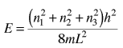

|
When the momentum expression for the particle in a box :
is used to calculate the energy associated with the particle
Though oversimplified, this indicates some important things about bound states for particles:
1. The energies are quantized and can be characterized by a
quantum number n
2. The energy cannot be exactly zero.
3. The smaller the confinement, the larger the energy required.
If a particle is confined into a rectangular volume, the same kind of process can be applied to a three-dimensional "particle in a box", and the same kind of energy contribution is made from each dimension. The energies for a three-dimensional box are

This gives a more physically realistic expression for the available energies for contained particles. This expression is used in determining the density of possible energy states for electrons in solids.
|